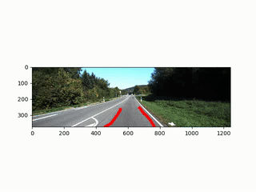
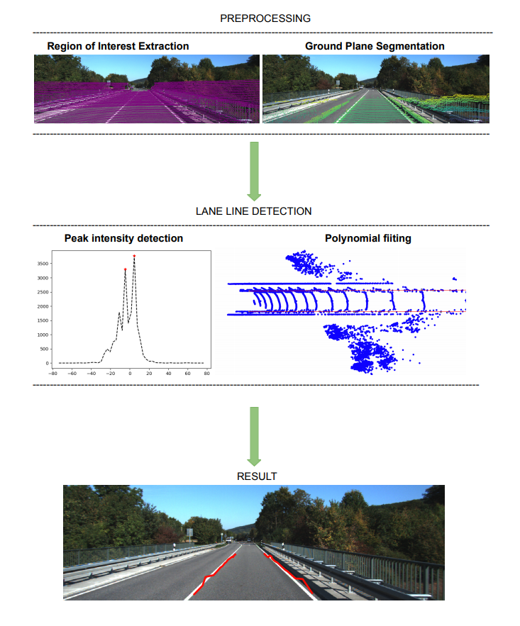
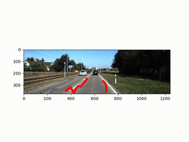
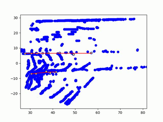

Lane Detection on Small 3D Point Cloud Data
This is the final project for the ME499 course at Northwestern University The goal of the project is lane detection for a small 3D LIDAR point cloud. Lane detection in lidar involves detection of the immediate left and right lanes, also known as ego vehicle lanes, with respect to the lidar sensor.

Motivation
Nearly half of all highway fatalities occur from unintended lane departures, which comprise approximately 20,000 deaths annually in the United States. A system able to quickly and reliably estimate the location of the roadway and its lanes based upon local sensor data would be a valuable asset both to fully autonomous vehicles as well as driver assistance technologies. Furthermore it can help in reducing unintended lane departures by alerting the driver when they are drifting out of the lane
Problem Statement:
The lane detection problem consists of using detected features to infer the presence of lanes and to generate an initial estimate of lane geometry. Lane estimation can be modeled as a curve estimation problem, where sensor data provides partial and noisy observations of curves. The number of curves to estimate may be initially unknown and many of the observations may be outliers and false detections. The challenge is to detect lanes when and where they exist on top of the image.
Approach
Lane line has a higher reflection of laser, thus its intensity of point cloud is stronger as compared to the plain asphalt or concrete of the street
The approach used was detecting lanes using windows sliding search from a multi-aspect airborne laser scanning point clouds which were recorded in a forward-looking view.Since the resolution of the point cloud is low, a deep learning approach or ML-unsupervised learning will not work. Although DBSCAN Clustering has been used for filtering out noise.
In this project, I attempted to demonstrate how to process 3-D lidar data from a LIDAR sensor mounted on a vehicle by segmenting the ground plane and detect lanes from point cloud data. I also developed visualization techniques to convert 3d point clouds to the panoramic view or bird’s eye view and overlay the 3D lidar points on top of the 2D image.

Result
The algorithm is a robust lane detection method that was able to perform well on urban and highway lanes. This method performs well on curavature lanes as well.Testing was performed on the KITTI vision Road/Lane dataset (http://www.cvlibs.net/datasets/kitti/eval_road.php)
 
Comparision with Deep Learning methods
-
For Deep Learning methods to perform well, it requires a large about of data and a high-density point cloud. The sliding window is a one-shot method and doesn’t require any training which works on sparse point clouds data as well.
-
In general DL methods are not good in generalization and perform well only on data that is similar to its training data. On the contrary, this approach is much more robust.
Take a look at the project on my GitHub page at https://github.com/ashleetiw/Lane-detection-pointclouds
Ref:https://www.mathworks.com/help/lidar/ug/lane-detection-in-3d-lidar-point-cloud.html
-->